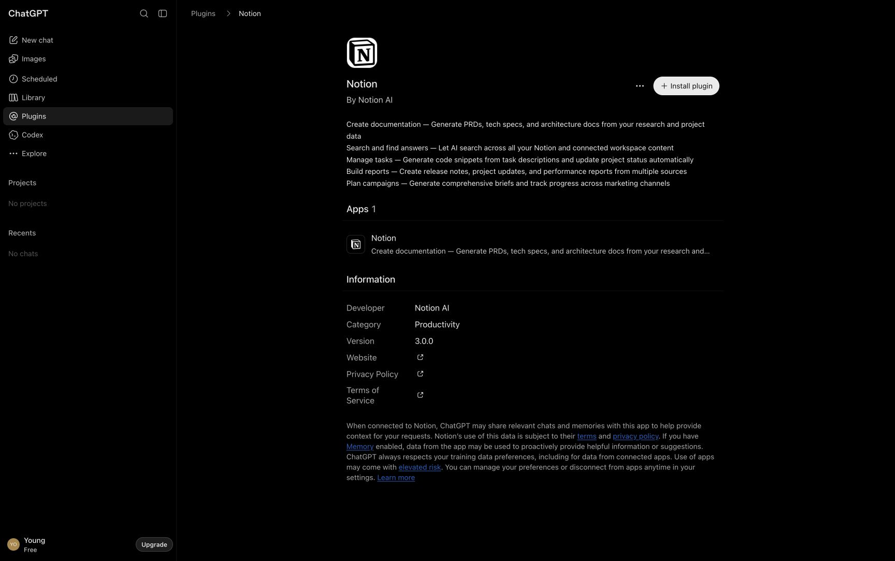
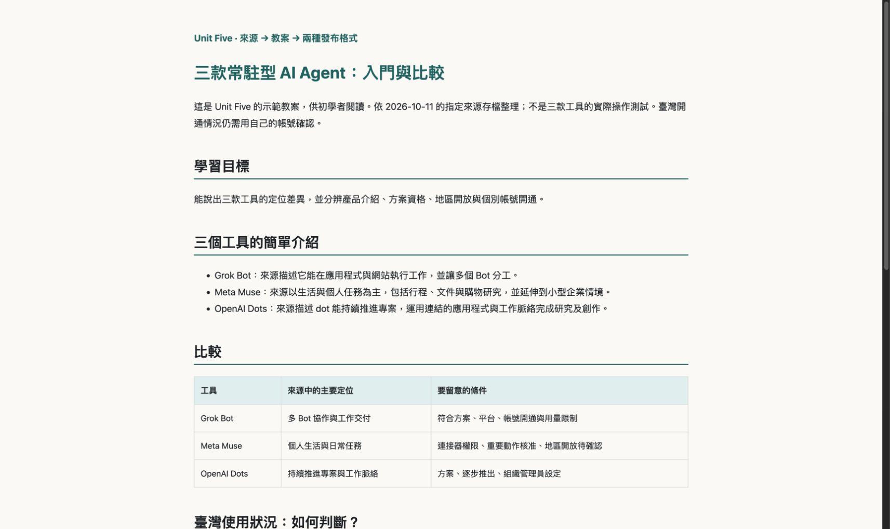
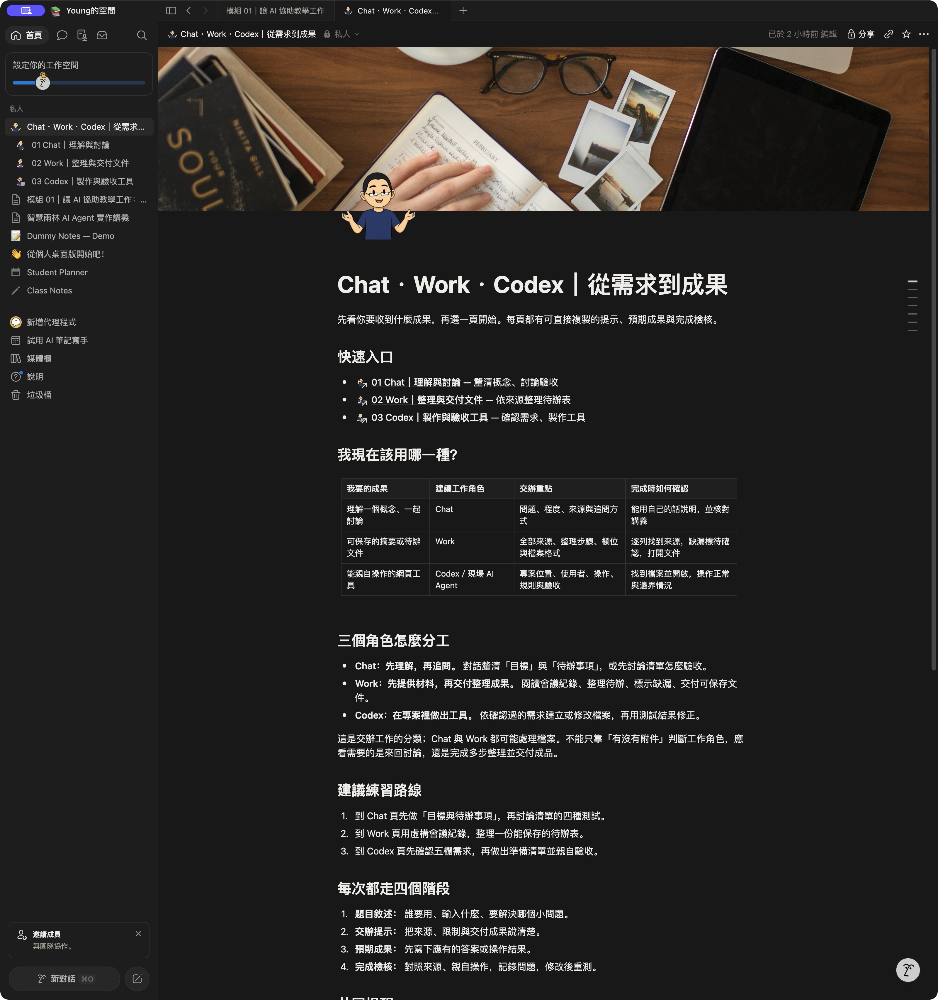
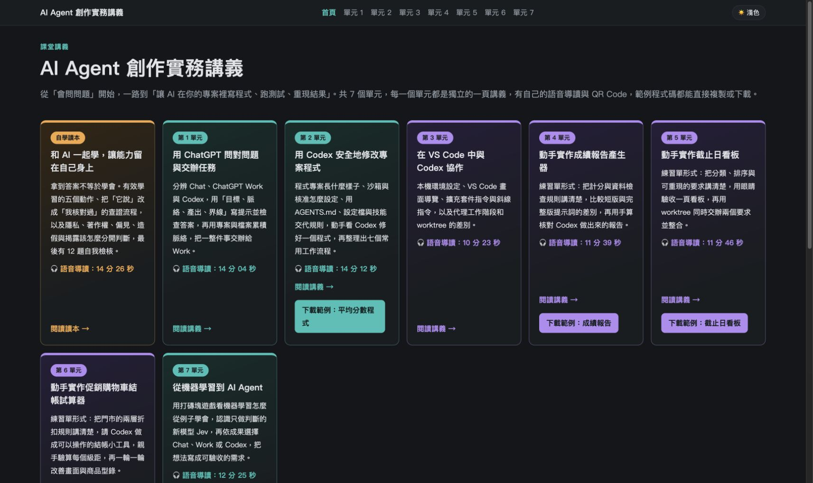

第二天 · 模組 05
模組 05｜從來源到教案，再讓教材上線
跟著一組提示，把研究資料整理成學生用的簡單教案，先放進 Notion，再把同一份內容轉成網頁發布到 GitHub Pages。做過示範後，換成你自己的課程資料再做一次。
01先看完整示範路線
這三款工具是示範的研究題材，不必先註冊或購買它們。我們操作的是 Codex、Notion 與 GitHub；學習重點是怎麼指定來源、交辦、核對與發布。
每一步都有說明、可複製提示、摺疊的可能回覆與完成檢核。畫面有三種標示：實際插件目錄、已存在的遠端成果、本次產生的本機範例。它們不代表本頁每一個提示都已在你的帳號執行。提示裡的方括號要換成自己的資料。
示例假設 Agent 已可執行本題授權範圍內的檔案修改及連接器動作，不反覆要求一般操作確認；這不會取代 Notion／GitHub 登入、授權或管理員政策，也不需要關閉所有安全保護。
02工具準備：把 Notion 連進 Codex
先有帳號，再有連線，最後確認目的地
Plugin 把 Notion 的 MCP 工具帶進 Agent；學員使用現成插件即可，不需自己架伺服器。MCP 是讓 Agent 使用外部工具的連接方式，並不是 Notion 帳號本身。
- 在 Codex 開啟 Plugins／插件入口；若版本入口不同，請用下面提示找 Notion，或從官方插件目錄辨識同一插件。
- 搜尋 Notion，檢查開發者為 Notion AI，選 Install／安裝；已安裝者進入管理或連線設定。
- 依畫面選 Connect／連接，由本人登入既有 Notion 帳號、選工作空間及頁面，核對要求的存取範圍後完成授權。不要在對話貼密碼。
- 回到 Codex，確認工具可用，再提供自己的父頁連結。需要切換示範帳號時，重新連接並再次核對。
請協助我準備 Notion 連線。我已經有 Notion 帳號，請找目前可用的官方 Notion plugin，說明如何安裝、連接及完成授權；已安裝就不要重複安裝。
登入與授權畫面由我本人處理。完成後請確認目前連接的 Notion 使用者與工作空間，並讀取我提供的父頁，回報頁面名稱與是否可存取。
這一步只檢查連線，不建立或發布教材。若工具不能取得帳號身分，請明列限制，不用瀏覽器帳號猜測。
父頁面 URL：[貼上自己的 Notion 父頁連結]可能的 AI 回覆｜連線確認
下列是示例，措辭與順序可能不同；不是本次遠端操作紀錄。假設本題需要的讀寫動作已獲授權，仍需本人完成登入與帳號核准。
Notion 插件已可使用。已確認目前連接身分，並讀到你指定的父頁；尚未建立教材。若尚未連接，會提供安裝／連接入口，待你完成登入授權後再確認。

- 插件存在與帳號連接分別確認；自己核對登入身分。
- Agent 能讀到指定父頁，不能讀時先解決連線，勿上傳到猜測的位置。
03指定 sources，產生學生教案
固定示範資料在 handouts/docs/sources/，有 README 及 raw 裡的 HTML／文字存檔。可先讀 來源清單；Agent 從專案根目錄使用下方確切路徑。不必讓學員重新做一次研究，先讓所有人用同一份資料比較成果。
示範教案包含：三款工具各自的簡介、比較表、臺灣使用狀況、短練習及來源。這是給學生閱讀的教案，不是本單元的操作教學本身。價格、地區與開放資格有時不一致：官方未確認就標「待確認」，推論必須明說。
請從專案根目錄讀取 handouts/docs/sources/README.md 與 handouts/docs/sources/raw/ 的相關文字資料；保留來源，不修改原檔。
請為非資訊背景的學生製作繁體中文簡單教案，主題為「Grok Bot、Meta Muse、OpenAI Dots」。內容要有：
1. 學習目標與三個工具各自的簡介。
2. 主要用途、操作入口、使用條件的比較表。
3. 臺灣目前可能的使用狀況：區分官方確認、來源推論與待確認；標出資料日期，不把未列入排除地區當成每個帳號都已開通。
4. 一個短練習、完成檢核、逐項來源連結。
優先引用指定資料中的官方存檔；媒體只作對照。價格或地區說法衝突時列出差異，不猜數字。這次只依指定來源，不額外加入網路內容。
請存成 output/unit05-demo/lecture-notes.md 及 sources.json，提供重點與來源對照。先不寫入 Notion 或 GitHub。可能的 AI 回覆｜已產生草稿
下列是示例，措辭與順序可能不同；不是本次遠端操作紀錄。假設本題需要的讀寫動作已獲授權，仍需本人完成登入與帳號核准。
已保存 Markdown 教案與來源對照。教案包含三款工具簡介、比較、臺灣狀況與檢核。Muse 與 Grok Bot 的臺灣開放資訊不足，保留待確認；Dots 的來源推論與個別帳號開通分開標示。請先對照來源再上傳。

- 三款名稱與簡介都有保留，主要說法可回到指定來源。
- 臺灣段落有資料日期、推論與待確認；沒有自行新增價格或開通時間。
- 實際找到並打開 Markdown 檔，而不是只看 AI 回覆。
04把核對後的教案上傳到 Notion
內容核對後才上傳。短教案可以一頁；內容較長才拆入口與子頁。這一步用上一份 Markdown，不要重新生成另一份比較結果。圖示是標題旁的原生 icon，封面是頁面頂端的橫幅。
請使用已核對的 output/unit05-demo/lecture-notes.md，上傳為我指定 Notion 父頁底下的新子頁。
先確認連接的帳號及父頁，再將 Markdown 轉成 Notion 原生標題、段落、列表與表格；保留內容、來源與待確認，不重新生成結論。
從 yang-Q/usage-guide.md 與現有 PNG 選合適吉祥物，設為原生頁面圖示；選呼應教案的線上封面，優先使用 Notion 的 Unsplash 選圖，記錄來源。若圖示工具不支援，就使用可用介面或回報缺項，不插入正文冒充 icon。
保持私人，不更動分享權限。建立後讀回核對內容、父頁與圖示封面，再開啟畫面確認，交付真實頁面連結及檢核結果。建立逾時時先檢查是否已建立，避免重複頁面。
父頁面 URL：[貼上自己的 Notion 父頁連結]可能的 AI 回覆｜Notion 上傳完成後的回報
下列是示例，措辭與順序可能不同；不是本次遠端操作紀錄。假設本題需要的讀寫動作已獲授權，仍需本人完成登入與帳號核准。
已在指定父頁建立教案子頁，保留比較表與來源，設定頁面圖示及封面。以下提供實際頁面連結與完成／未完成檢查。此頁仍是私人頁面；學生能否開啟，需依下一個提示設定與實測。

請檢查剛建立的教案與子頁目前的閱讀權限。我的目標是指定學生閱讀，不公開到網路。
請引導我在 Notion Share／分享設定中邀請預定閱讀者或設定符合需求的閱讀權限；需要閱讀者名單時再向我取得，不自行猜測。
完成後協助我以預定閱讀者身分驗證入口、子頁與來源連結。只記錄實際測過的結果；尚未以閱讀者身分測試就標「待測」。不要把頁面連結存在當成學生已能閱讀。可能的 AI 回覆｜閱讀權限確認
下列是示例，措辭與順序可能不同；不是本次遠端操作紀錄。假設本題需要的讀寫動作已獲授權，仍需本人完成登入與帳號核准。
頁面已依你的指定範圍分享；作者帳號能開啟。預定閱讀者的驗證結果另列；未實測項目保留待測，不宣稱已公開。
- 開啟真實 Notion 頁面核對三款工具、表格、來源與父頁。
- 圖示在標題旁，封面可見；畫面舊圖先重新整理再判斷。
- 學生可讀與私人上傳分別記錄，不把私人頁面連結當公開網站。
05同一份教案，再發布到 GitHub Pages
現在換目的地，不換教案內容。Notion 是原生文件，GitHub Pages 是靜態網頁；把同一份 Markdown 轉成可離線閱讀的 HTML，再部署。學員已有 GitHub 帳號，仍需確認 Codex 的 GitHub 連線或終端機授權可用，以及有權操作目標儲存庫。
- 請 Agent 檢查 GitHub 身分與發布能力；尚未登入時由本人完成官方登入授權。
- 指定自己擁有的儲存庫與發布資料夾；新手可使用獨立的公開示範儲存庫。
- 先產生 index.html 與必要資產，開本機預覽核對。勿將研究原始網頁、私人資料或憑證一起發布。
- 明確要求部署後，Agent 推送並設定／使用 Pages 發布來源；等待建置成功，再開真正的網站網址核對。
請使用同一份已上傳 Notion 的 output/unit05-demo/lecture-notes.md，轉成繁體中文、自包含的靜態網頁。
只轉換呈現，不重寫三款工具的事實、比較、臺灣狀況、日期與來源。使用清楚標題、可在手機閱讀的表格、短練習與檢核。
請存到 output/unit05-demo/site/index.html，必要資產放在同一 site/；不要放入原始研究存檔、私人資料或憑證。
開啟本機預覽，核對內容與 Markdown 一致、來源可開啟、手機沒有整頁橫向溢出，記錄結果。這一步不推送、不部署。可能的 AI 回覆｜網頁格式已完成
下列是示例，措辭與順序可能不同；不是本次遠端操作紀錄。假設本題需要的讀寫動作已獲授權，仍需本人完成登入與帳號核准。
已產生 site/index.html，並核對與 Markdown 的三款工具段落、比較與待確認一致。本機預覽結果及尚未測試的項目另列。現在只是本機檔案，尚未上線。
我已經有 GitHub 帳號。請先確認目前 GitHub 身分、目標儲存庫的寫入權限，以及可用的部署方式；若尚未登入，請引導我完成官方授權，不請我貼密碼或 token。
請把已核對的 output/unit05-demo/site/ 發布到下列我擁有的儲存庫，這份教案可以公開。只提交這個示範網站的檔案，不覆蓋其他教材，不建立付費服務。
儲存庫：[貼上自己的 GitHub 儲存庫 URL；或指定建立的新公開示範儲存庫名稱]
發布方式：若使用 main 的 /docs，請把網站入口放在 docs/index.html，依官方方式設定 Pages；已有設定就沿用並確認路徑。若工具不能設定 Pages，請提供本人操作 Settings → Pages 的精確步驟，完成後繼續驗證。
推送後等待對應建置成功，開啟真正的 GitHub Pages 網址，核對標題、三款工具、比較表、臺灣待確認與來源。回報真實網址、建置與畫面檢查；未完成就明列，不以 commit 或本機預覽代替上線證明。可能的 AI 回覆｜Pages 建置成功後的回報
下列是示例，措辭與順序可能不同；不是本次遠端操作紀錄。假設本題需要的讀寫動作已獲授權，仍需本人完成登入與帳號核准。
已推送指定網站檔案並確認 Pages 建置成功。以下是真實網站連結與線上內容核對結果。如果只有推送成功、建置未完成，就會明列「尚未上線」，而不是提供猜測網址。

- Notion 與 HTML 使用同一核對版本；重要內容、日期與來源一致。
- 只發布指定網站資料夾；Pages 設定、建置成功與真正網址都有核對。
- 用未登入視窗檢查公開網站，而不是只看儲存庫或本機檔案。
GitHub Free 的 Pages 通常使用公開儲存庫。請將本題指定為可公開的示範資料。不要照抄講師帳號、儲存庫或網站網址；即使專案有部署 Skill，也要先核對其中的目的地，不能將其他課程的固定路徑當成你的發布位置。
06換成自己的資料，完成兩個目的地
題目敘述 · Problem Statement
選一份有權使用的課程教材、課本節錄、參考文件或 Deep Research 結果，為你的學生做一份簡單教案，再放到自己的 Notion 與 GitHub Pages。使用課本時限於有權分享的內容，不整本公開上傳。
先選定四項：學生對象、題目、確切來源、可公開範圍。將資料放到 my-sources/；使用其他資料夾就更改提示中的路徑。課程個資先移除，研究結論仍要回到原始引用核對。
建議 Prompt · Suggested Prompt
請讀取這個工作空間 my-sources/ 的資料，先列出可讀檔案、來源引用與擷取限制。
學生對象：[填寫；未填時用本工作坊的非資訊背景初學者]
教案題目：[填寫；未填時依來源主題命名]
請只依這些資料製作繁體中文簡單教案，有學習目標、核心重點、適合主題的比較或流程、一個短練習、完成檢核與來源。
來源沒有說明的資訊標待確認；新增教學活動標教學改編；Deep Research 引用不足處明列，不當作已查證。
保存 output/my-lesson/lecture-notes.md 與 sources.json。保留原始資料，先不寫入外部平台，讓我核對。可能的 AI 回覆｜自己的草稿
下列是示例，措辭與順序可能不同；不是本次遠端操作紀錄。假設本題需要的讀寫動作已獲授權，仍需本人完成登入與帳號核准。
已依你的資料產生教案與來源清單；無法擷取的圖表及沒有根據的資訊另外列出。新增活動已標教學改編。請先看檔案再進入發布。
我已核對 output/my-lesson/lecture-notes.md。請確認目前 Notion 帳號，在我指定父頁下建立教案。
保留內容、來源與待確認，使用 Notion 原生區塊；從現有 yang-Q/ 選合適 page icon，搭配有來源且可使用的線上封面。若沒有這個素材資料夾，先回報，不自行生成或冒用圖像。
父頁面 URL：[貼上自己的 Notion 父頁連結]
不要公開、不改分享權限。讀回核對並開啟頁面檢查，交付真實連結、來源與檢核結果。需要分享給學生時，沿用本講義提示 4，依自己的閱讀者範圍設定。可能的 AI 回覆｜自己的 Notion 成果
下列是示例，措辭與順序可能不同；不是本次遠端操作紀錄。假設本題需要的讀寫動作已獲授權，仍需本人完成登入與帳號核准。
已建立指定教案並提供真實連結；內容、圖示與封面檢查分別記錄。學生存取若尚未實測，就保留待測。
請使用同一份已核對的 output/my-lesson/lecture-notes.md，產生 output/my-lesson/site/index.html，保留內容、引用與日期，只調整網頁呈現。
先核對本機桌面與手機預覽，再確認我的 GitHub 身分及目標儲存庫。這份教案已經過我檢查，可公開發布。
儲存庫：[貼上自己的 GitHub 儲存庫 URL]
只發布 site/ 的必要網頁與資產，不發布 my-sources/ 或其他私人資料；不覆蓋既有網站。設定或沿用 Pages 發布來源，等待建置完成並檢查真正的線上網址。
最後把來源清單、Notion 連結、Pages 連結及實際完成的內容／畫面／閱讀權限檢核整理成 output/my-lesson/delivery.md；未完成明列，不宣稱成功。可能的 AI 回覆｜自己的雙平台交付
下列是示例，措辭與順序可能不同；不是本次遠端操作紀錄。假設本題需要的讀寫動作已獲授權，仍需本人完成登入與帳號核准。
交付清單已列出來源、兩個目的地的真實連結，以及各項完成或待完成檢查。若 Notion 可讀但 Pages 尚未建置完成，兩邊狀態會分開記錄。
預期成果 · Expected Outcome
一份本機教案、一份來源紀錄、一個 Notion 教材連結、一個 Pages 公開網址，以及能指出完成與缺項的交付清單。畫面應與前面的範例相同類型，但題目、帳號、頁面與網址屬於你自己。
完成檢核 · Check it
- 讀過自己的草稿；每個重點有來源，新增活動與待確認清楚。
- 自己開啟 Notion 檢查，並確認預定學生的存取狀態。
- 自己開啟 Pages 真正網址；比較兩邊標題、重點、日期與引用。
- 沒有公開原始課本、個資或未授權素材；交付記錄沒有密碼或 token。
07最後驗收：看到成果，也查得到依據
Agent 可以完成很多動作，但你負責判斷教材是否適合學生。先找檔案，再看頁面，最後用閱讀者身分走一次。不要把可能回覆當執行證據，不把舊成果截圖當成本次新發布。
| 交付項目 | 要留下的證據 |
|---|---|
| 來源與教案 | 確切來源、日期、Markdown、未確認事項 |
| Notion | 真實頁面連結、父頁、內容讀回、圖示封面與閱讀權限 |
| GitHub Pages | 自己的儲存庫、發布資料夾、對應建置成功、真實網站與畫面 |
| 同內容 | 兩邊重要內容、日期與來源一致；僅呈現格式不同 |
依據與畫面來源
整理與擷取日期：2026-10-11。產品教案依指定 sources 存檔；臺灣開通未以三款工具的實際帳號測試。插件目錄與既有 Notion／Pages 截圖用來辨識操作與成果；本機教案畫面為本次實際範例。這份講義的編寫沒有新建或公開三款 Agent 的遠端教案。
- 本工作坊研究來源清單
- 官方插件目錄：搜尋 Notion（開發者 Notion AI）
- OpenAI 官方：插件登入與存取授權分開處理
- Notion 官方：頁面圖示與封面
- Notion 官方：分享與權限
- GitHub 官方：建立 Pages 網站與驗證發布
接下來的模組 06 進入 AI 專題：沿用先核對來源、再交付成果的習慣，請 AI Agent 一層一層做出照護場域排班小工具。